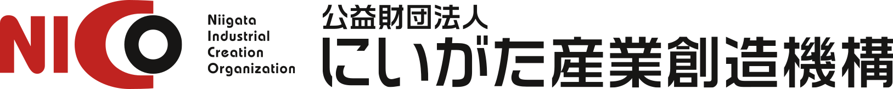

公的登録

公益財団法人にいがた産業創造機構（NICO）「新潟県DXパートナー」に登録されました
新潟県内の中小企業・自治体のDX推進を伴走支援するため、NICOが運営するパートナー制度に正式登録されました。
生成AIイノベーション合同会社は、公的機関・法人・個人のすべてに、最先端のAIをわかりやすく届けます。抵抗感や不安を対話で解きほぐし、誰もがテクノロジーの恩恵を受けられる社会を、新潟から創り出します。
生成AIに対する恐怖や抵抗感を対話で取り除き、公的機関・企業・個人のすべてが、テクノロジーを自分の力として当たり前に使いこなせる土壌を整えます。
「AI is 信用できない」という現場の生の声に寄り添うこと。対話を重ねて抵抗感を解きほぐし、一歩ずつ確かな信頼関係を築いていきます。
誰よりも早く動いて、目に見える形（プロトタイプ）にして提示すること。素早い行動力で「動くもの」をつくり、普及のスピードを加速させます。
新潟大学での学びや人的なつながりを起点にすること。学術的な知見を、社会のリアルな現場で役に立つ実践的なソリューションに変えていきます。
私たちが目指す未来は、2つの軸で成り立っています。
新しい技術が社会に広がるとき、その普及はいつも決まった曲線を描きます。生成AIはいま、まさに急激な立ち上がりの局面にあります。私たちが果たしたいのは、その曲線の傾き——広がる速さそのものを、できる限り大きくすることです。個人も、法人も、公的機関も。あらゆる組織と一人ひとりがAIを当たり前に使う世の中を、一日でも早く手繰り寄せます。
便利な道具は使ったほうがいいに決まっているのに、AIを使うことを「ずるい」「手を抜いている」と見なす空気が、今の世の中にはまだ残っています。その結果、使いこなす力が成果として認められず、評価にも報酬にも反映されない。私たちはこの評価のあり方を変えます。AIを使いこなす力そのものが価値（Value）として認められ、評価され、給与として返ってくる。そんな評価基準が当たり前になった社会をつくります。
公的機関・企業・個人を対象に、生成AIの基礎から実務での使いこなしまでを、専門知識がなくても分かるように伝える研修・セミナーを企画・開催。組織や個人のAIリテラシー向上を支援します。
初月は60分×2回、2か月目以降は毎月1回60分。御社のお話を伺って、助言する立場です。ご訪問しての対面が基本ですが、オンラインでも同じ内容で承ります。AIは進み方が速く、「いま何を使うべきか」「これは自社でやるべきか」の判断が毎月変わります。その判断を、社外の人間として一緒に更新していきます。手を動かす作業は含みません。まずは相談相手が欲しい、という段階の方へ。
「AIで何ができるのか分からない」という状態から始めて構いません。50,000円で、私が顔を合わせて教える時間をまるごと10時間お渡しします。おひとりに10時間でも、10名に1時間ずつでも配分は自由。ツールの選定・設定・手順書づくりは時間にカウントせず当社が行い、御社の方が自分で作れるようになるまで伴走します。
「AIで何ができるか分からない」という企業・自治体・団体様のもとへ直接伺い、現在の業務フローをヒアリング。生成AIの導入による業務効率化、自動化、DX推進の具体的なロードマップを提案・伴走支援します。
エンジニア自身がお客様の現場に入り込み、実際の業務を間近で見ながら、その場でAIの仕組みを作り込む伴走型の開発スタイルです。
※「ツールを納品して終わり」ではなく、現場に深く踏み込み、本当に使えるものになるまで一緒に育て上げる働き方のことです。
社内専用のセキュアなチャットAIツールや、日々のルーティンワークを自動化するAIアシスタントの構築など、現場で誰でも「カンタンに使える」ソリューションを開発・提供します。
大学や研究機関、他企業様との共同による、最先端の生成AIモデルの応用研究や、実用化に向けた研究委託を請け負います。技術の底上げと学術的なイノベーションへ貢献します。
料金の目安と詳しい対応例は 事業内容の詳細ページ
「AIで何ができるのか」は、外から見ているだけでは分かりません。できることが多すぎるからです。ここに並べたのは、代表が実際に手を動かして効果が出たものだけです。
領収書を撮るだけで、仕訳から帳簿まで通ります。
案件を入れれば、発行から記帳まで流れます。
文言を書き換えるだけで作り直せます。刷り直しの手戻りがありません。
チラシ・店頭POP・館内掲示も自分たちで。多言語にも対応できます。
規程やマニュアルを読ませ、社員の質問に答えさせます。
下書きまでを自動で。人は確認して出すだけです。
決まったサイトや制度情報を見に行き、要点だけ届けます。
つまずいたところを調べて、できる状態になるまで一緒に進めます。
生成AIイノベーション合同会社の最新情報、公的認定、活動実績をお届けします。

新潟県内の中小企業・自治体のDX推進を伴走支援するため、NICOが運営するパートナー制度に正式登録されました。
新潟大学にて技術経営（MOT）を研究（大学院進学予定）。研究で得た知見を、新潟の企業の現場に還元することを事業の柱としています。
プロフィール・研究業績を見る| 商号 | 生成ＡＩイノベーション合同会社 |
|---|---|
| 設立 | 2026年7月15日 |
| 代表社員 | 中川 碧偉 |
| 本店所在地 | 新潟県新潟市江南区 |
| 主な事業内容 | 1. AI/ITを活用したコンサルティング・仲介業務 2. ソフトウェア・ハードウェアの企画・研究・開発・販売 3. 学術出版物の発行および経営コンサルティング 4. Webサイト・ECサイトの企画・制作・運営管理 |
| 公的登録 | 新潟県DXパートナー（公益財団法人にいがた産業創造機構 NICO） |
当社は、公益財団法人にいがた産業創造機構（NICO）が運営する「新潟県DXパートナー」の登録事業者です。新潟県内の中小企業・自治体の皆様が抱えるデジタル化・業務改善の課題に対し、現場目線に立った実践的な生成AI導入・研修・自動化を伴走支援いたします。
登録の詳細・ご提供メニューを見る
AI導入のご相談、共同研究のご提案、その他お問い合わせは、
下記のGoogleフォームよりお気軽にご連絡ください。